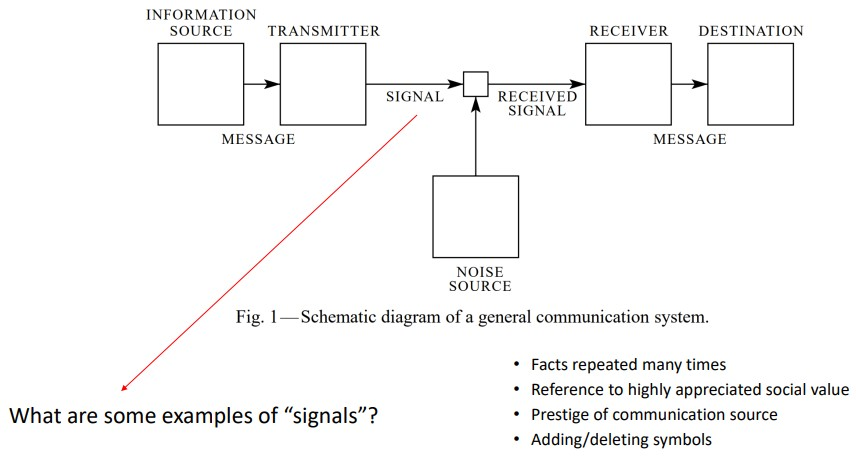
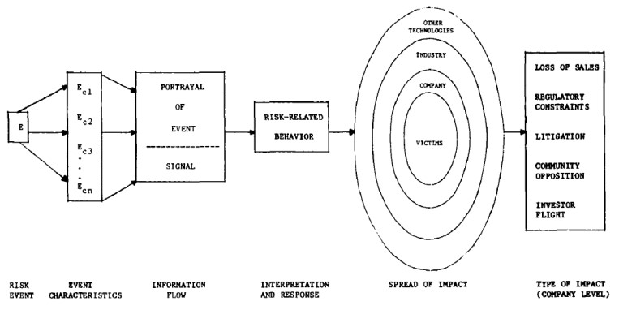

7 Media and the Amplification of Risk
Social activities often magnify the risks of events.
7.1 Technical Assessments of Risk
Some scholars have criticized the technical aspects of assessing risks:
Narrow Definitions
In other terms, people have a “comprehensive conception of risk”.
Heuristics and Biases
Underlying cognitive patterns may influence how people perceive risks.
Other Issues Not Covered by Risk Assessments
For instance, equity, circumstances, and the timeliness of management responses.
Risk Impacts
Sometimes, the impact of risks may go beyond direct impacts (e.g., liabilities, insurance costs, loss of consumer trust in corporations, etc).
7.2 Risk Amplification
Risk amplification is the intensifying or the attenuating of signals during information sharing from an information source through intermediary sources and finally, the receiver.
7.3 Infodemiology Frameworks
Infodemiology is the study of health information across different channels for the sake of monitoring population health.
There are two sources of information:
Supply-Based Data Sources
This consists of postings from social media, blogs, discussion boards, websites, or any other sources that “supply” health information to the public.
Demand Navigation-Based Data
This refers to information such as clicks or web searches that indicate the kind of content that people are seeking out.
7.3.1 Topic Modelling and Information Asymmetry
Topic modelling is a kind of unsupervised machine learning that allows researchers to find out which topics that a document discusses.
Information asymmetry is a phenomenon that happens when both parties do not have the same access to information
7.3.1.1 Study on Financial Bloggers and Informational Asymmetry
This study was done on the basis that financial blogs could close gaps in informational asymmetry.
The dependent variable was 90 day return of insider buying while the independent variable was the number of firm-specific blog posts.
Regression analysis showed that the number of firm-specific blog posts was negatively associated with the 90 day return of insider buying. Consequently, blogs and new media democratize financial returns.
7.2.1 Social Amplification of Risks

Social amplification of risk is when institutional structures, social circles, and individual responses shape the perceived intensities of risks, hence contributing to consequences.
7.2.1.1 Social Amplification Stations
Stations generate and transmit information via communications channels (e.g., media, letters, telephones, etc).